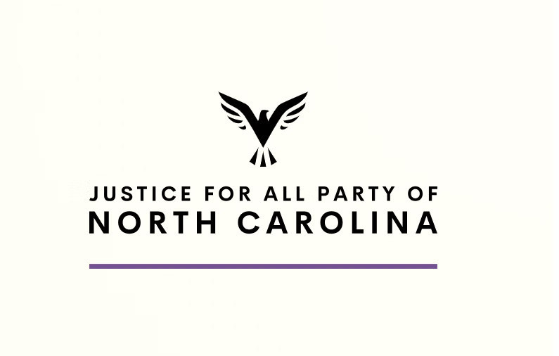

Welcome to the Justice For All Party Of North Carolina Website
The Justice For All Party Of North Carolina is a political party that was formed in 2024 to put Cornel West on the ballot. Right now, the party is undergoing a rebuilding stage. Our founding members joined together with a shared vision: to create an organization that champions transparency, accountability, and a new approach to political engagement. While our legal documents guide our internal operations, our public work focuses on fostering a more inclusive and just political landscape. We believe that a fair and accountable political process is essential for social progress. Our commitment to justice and equity drives every decision we make—from our grassroots activism to our efforts to redefine political leadership.
Our Mission
Our mission is to reshape political engagement by ensuring that every community’s voice is heard. We are dedicated to creating a transparent, accountable, and inclusive political process that empowers the marginalized and challenges established systems of power. Through active grassroots mobilization and innovative leadership structures, we are building a future where justice is not just an ideal, but a reality.
Transparency & Accountability
We uphold the highest standards in all our operations and decision-making processes.
Inclusivity
Every voice matters. We work tirelessly to amplify those often left unheard. Demonstrating love in public policy.
Grassroots Empowerment
By fostering local leadership and community-based initiatives, we drive meaningful, sustainable change.
Join us as we work to create a political system that truly represents the people.
Governance
We believe that every individual has the power to drive change. Whether you’re passionate about political reform, community empowerment, or social justice, there’s a place for you at the Justice For All Party. Explore ways to contribute, from volunteering and attending events to sharing your ideas and supporting our initiatives.
Officers
Our leadership team will include a Chair, Vice-Chair, Records Custodian, and Treasurer. Each role is designed to support transparency and effective management. Right now we are trying to grow the party before we start electing leaders.
Committees & Subcommittees
These teams handle day-to-day operations and specific projects, ensuring a responsive and agile organizational structure.
This governance framework helps us maintain integrity, meet legal standards, and remain accountable to our community. For a detailed look at our internal policies, authorized members may access our full legal documents through our secure members’ area.
Get Involved
Every voice matters. We work tirelessly to amplify those often left unheard.

Volunteer
We uphold the highest standards in all our operations and decision-making processes.

Spread the Word
By fostering local leadership and community-based initiatives, we drive meaningful, sustainable change.
Together, we can build a future where justice for all isn’t just a vision—it’s our everyday reality.
Join Us
Justice For All Party Of North Carolina on
Discord